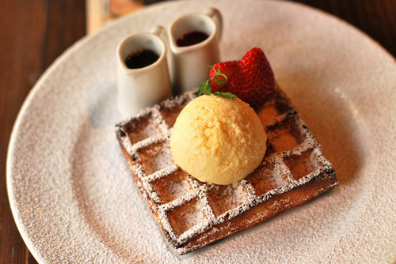
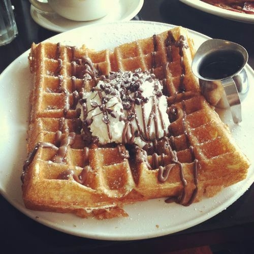

Inicio
Receta
Contacto
¿Cómo se prepara?

Ingredientes
500 gr. de harina
25 gr. de levadura
200 gr. de margarina o mantequilla derretida
1/2 l. de leche
1/2 l. de agua
4 huevos
1 sobre de azúcar de vainilla
5 gr de sal
Preparación
Disolver la levadura en 1/4 l. de agua tibia.
Batir la clara de huevo hasta el punto de nieve.
Pasar la harina por un colador en un bol y hacer un pequeño hueco en medio.
Tirar la levadura disuelta en el hueco y mezclarlo con un poco de harina.
Remover con la leche tibia y las yemas de huevo.
Uno por uno, añadir la mantequilla derretida, la clara de huevo al punto de nieve, la azúcar de vainilla y la sal.
Dejar que la masa suba en un lugar caliente hasta que se haya doblado de tamaño.
Poner un poco de masa en la máquina de hacer gofres.
Espolvorear las gofres con azúcar glass o poner nata encima.

Fuente:
Visitflanders